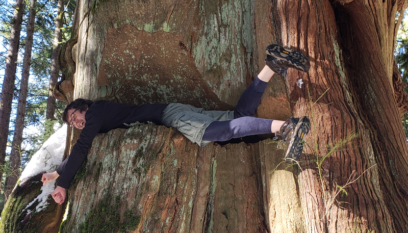

I made a bitcoin wallet app, coinos, and still work on it from time to time
I worked on Althea in 2018 and 2019 and hope to establish a community network in my neighbourhood at some point
I'm a member of Decentral Vancouver and sometimes give talks and attend events there
I like gardening and for a short while I was a farmer. You can see my other jobs on LinkedIn
Politically, I'm an anarcho-capitalist voluntaryist. I was born and raised in so-called Canada. I pay Canadian taxes and abide by Canadian law for the most part but only under duress, to avoid fines, imprisonment, and marital strife. I reside in territory that Canada lays claim to but that was unceded by the indigenous Coast Salish people that occupied it before European settlement. I worked for the Canadian Federal Government as a civil servant for nearly a decade. I no longer self-identify as Canadian. I no longer vote
I practice yoga and permaculture
I've been in a hetero common-law relationship with my wife Chelsea for more than 17 years. My pronouns are he/him. We cohabitate and have two young children, a boy and a girl
I long to see a world with more biodiversity and regenerative agriculture, less dependence on big governments and corporations, more local-scale resilience and community self-reliance through co-ops, fraternal organizations, charities, clubs, associations, societies and the like, more art, beauty, and play
I'm a techno-optimist, a solar punk, but not the communist variety
I can play guitar, piano and the harmonica, kinda
I like to ride my bike and go for long walks in the forest
My PGP key and social accounts are linked at keybase
Send me email at asoltys@gmail.com
